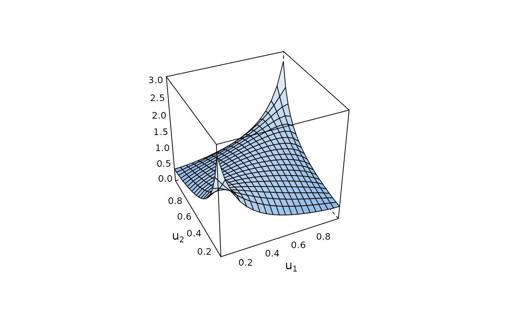

This function creates an object of class BiCop and checks for
family/parameter consistency.
BiCop(family, par, par2 = 0, tau = NULL, check.pars = TRUE)
Arguments
| family | An integer defining the bivariate copula family: |
|---|---|
| par | Copula parameter. |
| par2 | Second parameter for bivariate copulas with two parameters (t,
BB1, BB6, BB7, BB8, Tawn type 1 and type 2; default is |
| tau | numeric; value of Kendall's tau; has to lie in the interval
(-1, 1). Can only be used with one-parameter families and the t copula.
If |
| check.pars | logical; default is |
Value
An object of class BiCop(). It is a list containing
information about the bivariate copula. Its components are:
copula family number and parameter(s),
number of parameters,
name of the copula family,
Kendall's tau,
Blomqvist's beta,
lower and upper tail dependence coefficients,
the call that created the object.
Note
For a comprehensive summary of the model, use summary(object);
to see all its contents, use str(object).
See also
Examples
## create BiCop object for bivariate t-copula obj <- BiCop(family = 2, par = 0.4, par2 = 6) obj#> Bivariate copula: t (par = 0.4, par2 = 6, tau = 0.26)#> List of 9 #> $ family : num 2 #> $ par : num 0.4 #> $ par2 : num 6 #> $ npars : num 2 #> $ familyname: chr "t" #> $ tau : num 0.262 #> $ beta : logi NA #> $ taildep :List of 2 #> ..$ lower: num 0.127 #> ..$ upper: num 0.127 #> $ call : language BiCop(family = 2, par = 0.4, par2 = 6) #> - attr(*, "class")= chr "BiCop"summary(obj)#> Family #> ------ #> No: 2 #> Name: t #> #> Parameter(s) #> ------------ #> par: 0.4 #> par2: 6 #> Dependence measures #> ------------------- #> Kendall's tau: 0.26 #> Upper TD: 0.13 #> Lower TD: 0.13 #>## a selection of functions that can be used with BiCop objects simdata <- BiCopSim(300, obj) # simulate data BiCopPDF(0.5, 0.5, obj) # evaluate density in (0.5,0.5)#> [1] 1.185466#> Bivariate copula: t (par = 0.4, par2 = 6, tau = 0.26)#> Family #> ------ #> No: 2 #> Name: t #> #> Parameter(s) #> ------------ #> par: 0.4 #> par2: 6 #> Dependence measures #> ------------------- #> Kendall's tau: 0.26 #> Upper TD: 0.13 #> Lower TD: 0.13 #>